Autonomous Free-Form Trenching Using a Walking Excavator
한줄 요약 — 두 LiDAR와 버킷 궤적을 융합해 가림·낙토·자기점군을 억제하고, SDF 위 cubic Hermite spline을 SQP로 최적화한 뒤 힘제어 굴착과 계층형 IK를 상태기로 전환함으로써 12톤 보행 굴착기가 1.5 m 버킷으로 자유형 트렌치를 사용자 개입 없이 평균 2.4~2.7 cm 오차로 만들었다.
1.연구 배경 및 동기
평탄한 도랑을 넘어 CAD 자유곡면을 실차로 닫힌고리 시공하기
기존 자율 굴착기는 평탄한 바닥이나 외부 기준면을 만드는 데 집중했고, 복잡한 자유형 지형을 실제 장비로 시공한 사례는 없었다. 굴착은 로봇이 스스로 환경을 계속 바꾸므로 일반 정적 SLAM이나 고도지도만으로는 충분하지 않다. 버킷 뒤의 제거영역은 LiDAR에서 가리고, 가득 찬 버킷에서 떨어지는 흙이 공중 점군으로 잡히며, 팔과 다리 자체가 지도에 들어온다. 동시에 토양저항은 위치궤적을 그대로 따르기 어렵게 하고, 상용 유압기의 유량·속도·관절·충돌 제약은 하나의 제어기에서 다뤄야 한다.
논문은 이전의 시뮬레이션 기반 힘궤적 굴착과 반복 계획을 12 t HEAP 실차에 옮기기 위해 센싱, 유압 하드웨어, 지도, 공중 경로계획, 팔 제어, 굴착 상태기를 함께 설계한다. CAD 목표를 2.5D 고도지도로 바꾸고, 다음 공격점과 덤프점을 선택한 뒤 토양에 닿기 전후로 위치제어와 힘제어를 전환한다. 목표는 한 번의 굴착 성능이 아니라 지도오차가 수렴할 때까지 전체 작업을 사용자 개입 없이 반복해 자유곡면을 재현하는 것이다.
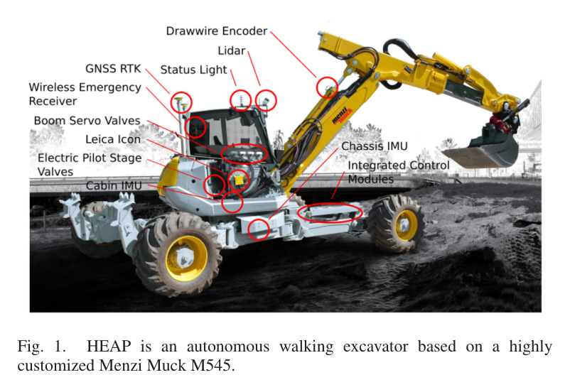
원문 Figure 1 · PDF p.1 — Fig. 1. HEAP is an autonomous walking excavator based on a highly customized Menzi Muck M545.
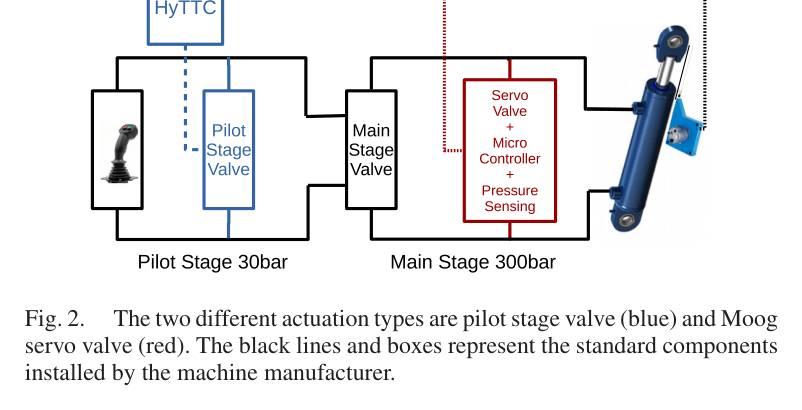
원문 Figure 2 · PDF p.2 — Fig. 2. The two different actuation types are pilot stage valve (blue) and Moog servo valve (red). The black lines and boxes represent the standard components installed by the machine manufacturer.
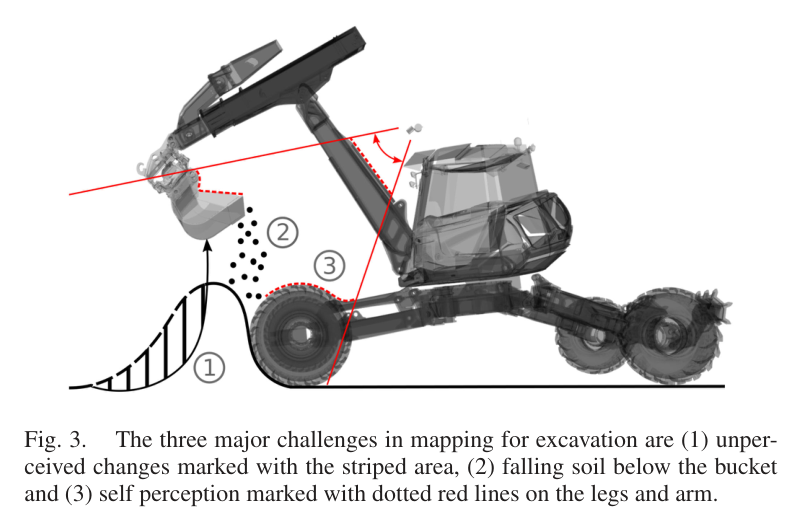
원문 Figure 3 · PDF p.3 — Fig. 3. The three major challenges in mapping for excavation are (1) unper- ceived changes marked with the striped area, (2) falling soil below the bucket and (3) self perception marked with dotted red lines on the legs and arm.
선행 연구의 한계
기존 Haga와 ALS 계열은 평탄한 트렌치 바닥을 목표로 했고, 자유형 표면을 기하 피드백으로 재현하지 못했다.
LOAM·ICP 같은 일반 지도화는 자가 변경 지형을 충분히 빠르게 갱신하지 못하며, 버킷 가림·낙토·로봇 자체 점군을 작업 맥락 없이 구분하기 어렵다.
파일럿단 밸브는 유량은 크지만 속도 제어 대역폭이 낮고, 고정밀 서보밸브는 응답이 빠른 대신 유량과 압력강하 제약이 있어 공중 이동과 굴착에 같은 구동모드를 쓰기 어렵다.
이전 시뮬레이션 계획은 먼저 전체를 거칠게 판 뒤 시작점으로 돌아와 정삭했기 때문에 완성된 형상을 다시 밟거나 손상시킬 수 있었다.
이 연구의 기여
두 VLP-16 LiDAR의 외감각 고도지도와 버킷 날 궤적의 고유감각 지도를 융합해 가려진 자가 변경 지형까지 보존하는 굴착 특화 매핑을 구현했다.
2.5D 지도에서 3D SDF를 만들고 cubic Hermite spline 지지점을 SQP로 조정해 길이·충돌·균등간격을 함께 최적화하는 버킷 공중경로를 제시했다.
거친 굴착과 목표면 추종을 작업상태에 따라 교차 실행하는 상태기로 4분절 평면과 자유곡선 트렌치를 각각 센티미터급 평균오차로 무인 시공했다.
2.방법론 및 시스템 구성
HEAP는 Menzi Muck M545를 기반으로 한 12 t 보행 굴착기다. Leica iCON iXE3 이중 GNSS와 RTK, 캐빈·차체 IMU, 100 Hz 드로와이어 실린더 센서, 서보밸브 압력센서, 서로 직교 배치한 두 Velodyne Puck VLP-16을 사용한다. 공중 이동은 큰 유량의 파일럿단 밸브와 속도제어를, 토양 접촉은 고대역 메인단 서보밸브와 힘제어를 선택한다.
자율 사이클은 목표 CAD 고도와 현재 지도를 비교해 공격점을 고르고, SDF-SQP로 현재 버킷에서 공격점까지 충돌 없는 궤적을 만든다. 계층형 IK가 공중구간을 따라가며, 접촉 상태와 목표면 거리 및 추정 상호작용힘에 따라 목표면 추종 또는 힘제어 굴착을 실행한다. 버킷이 차거나 차체에 가까워지면 종료하고, 버킷 날 궤적으로 가려진 지도를 임시 갱신한 뒤 선회 중 LiDAR로 확정한다.
처리 파이프라인
1
굴착 인지형 고도지도
0.1 m 격자에 두 LiDAR 점군을 융합한다. 버킷이 흙 속을 지난 영역은 날 궤적을 높은 불확실성으로 삽입하고, 덤프 선회 때 새 LiDAR가 보이면 낮은 불확실성으로 치환한다. 버킷 아래 이동 상자필터는 떨어지는 흙을, 다중 메쉬 self-filter는 팔·다리 점군을 제거한다.
2
SDF와 SQP 공중경로
2.5D 지도에서 부호거리장(SDF)을 만들고, 여러 cubic Hermite spline을 지지점으로 연결한다. 직선 초기경로의 충돌 지지점을 SDF 기울기로 위로 올린 후 SQP가 경로길이, CHOMP형 충돌비용, 지지점 간격 표준편차를 가중합으로 최소화한다.
3
기계한계 인지 계층형 IK
캐빈 선회와 붐·디퍼·텔레스코픽·삽의 5 DoF를 제어한다. 펌프 최대유량, 실린더 속도, 스트로크, Bullet 기반 자기충돌, 말단 자세, 말단 위치, 최소 관절속도 순으로 우선순위를 둔다. 목표 spline 위치·속도에 PID 피드백을 더해 명령한다.
4
힘제어 단일 굴착
강체 동역학, 중력·코리올리, 점성·정지마찰 보상을 포함해 목표 말단힘을 관절 힘으로 변환한다. 2차 residual wrench로 접촉을 추정하고, 시작점이 목표면에 가깝지 않으면 토양독립 힘궤적을 실행하며 목표면에 가까우면 먼저 표면을 위치추종한다.
5
상태기 전환과 버킷 충전 추정
표면 추종 중 힘이 임계치를 넘으면 힘제어로 바꾼다. 비접촉 상태에서 힘제어를 시작하지 않도록 버킷을 수직 하강해 접촉을 확보한다. 이전 지도와 버킷 날 궤적으로 쓸어 담은 부피를 추정해 가득 참을 판정하고, 다리·차체 근접도 종료조건으로 사용한다.
6
덤프·재관측·다음 공격점
계획기가 덤프점을 정하고 공중경로와 IK로 이동해 흙을 비운다. 덤프 위치 지도를 강제 갱신하고, 선회 중 트렌치 LiDAR 관측으로 가려졌던 높은 불확실성 셀을 보정한다. 거친 굴착과 정삭을 필요에 따라 즉시 번갈아 실행한다.
목표 말단힘을 Jacobian으로 관절공간에 옮기고 코리올리·중력과 점성·정지마찰을 보상하되 실린더 힘 한계 안에서 명령한다.
공중 말단 추종
\dot r_{des}=\dot r_{traj}+PID(r,r_{traj})
Hermite spline이 주는 피드포워드 속도에 위치오차 PID를 더해 계층형 IK의 말단 자세·위치 과제로 사용한다.
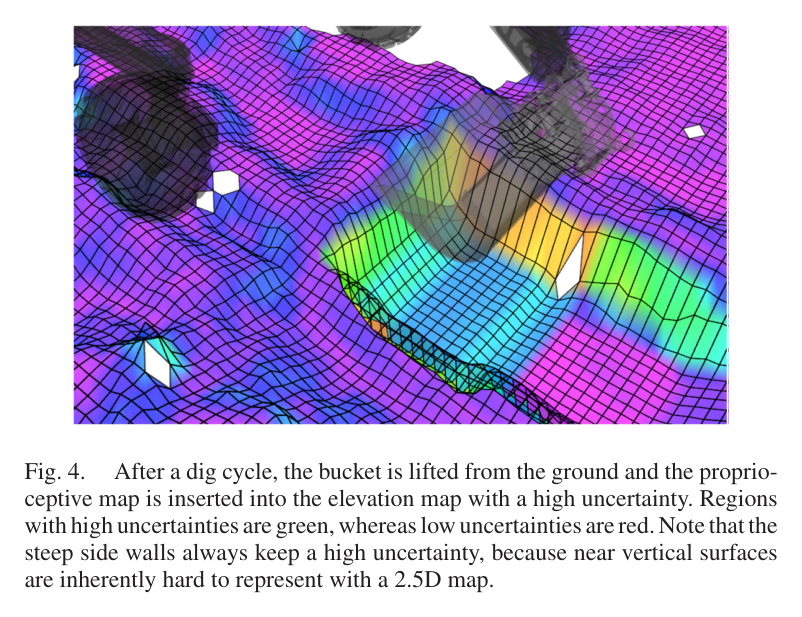
원문 Figure 4 · PDF p.3 — Fig. 4. After a dig cycle, the bucket is lifted from the ground and the proprio- ceptive map is inserted into the elevation map with a high uncertainty. Regions with high uncertainties are green, whereas low uncertainties are red. Note that the steep side walls always keep a high uncertainty, because near vertical surfaces are inherently hard to represent with a 2.5D map.
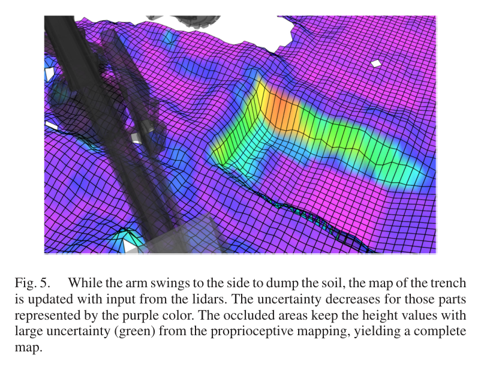
원문 Figure 5 · PDF p.3 — Fig. 5. While the arm swings to the side to dump the soil, the map of the trench is updated with input from the lidars. The uncertainty decreases for those parts represented by the purple color. The occluded areas keep the height values with large uncertainty (green) from the proprioceptive mapping, yielding a complete map.
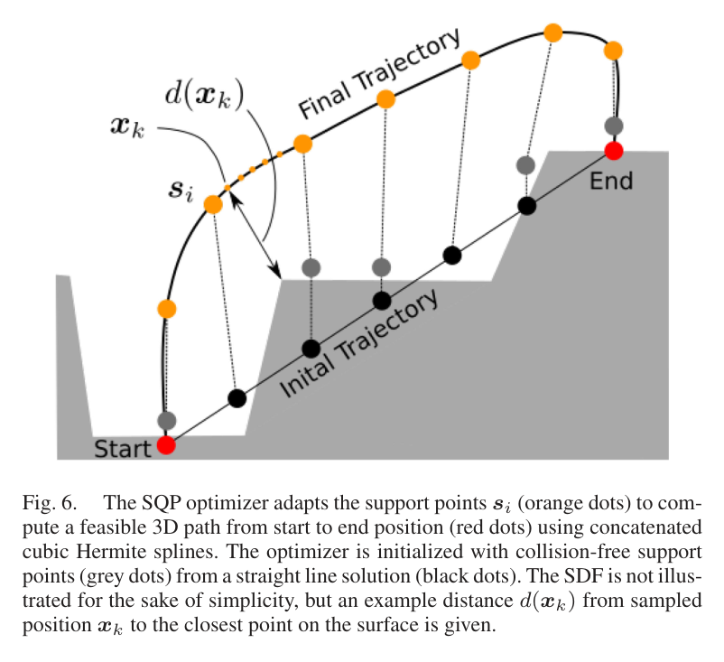
원문 Figure 6 · PDF p.4 — Fig. 6. The SQP optimizer adapts the support points si (orange dots) to com- pute a feasible 3D path from start to end position (red dots) using concatenated cubic Hermite splines. The optimizer is initialized with collision-free support points (grey dots) from a straight line solution (black dots). The SDF is not illus- trated for the sake of simplicity, but an example distance d(xk) from sampled position xk to the closest point on the surface is given.
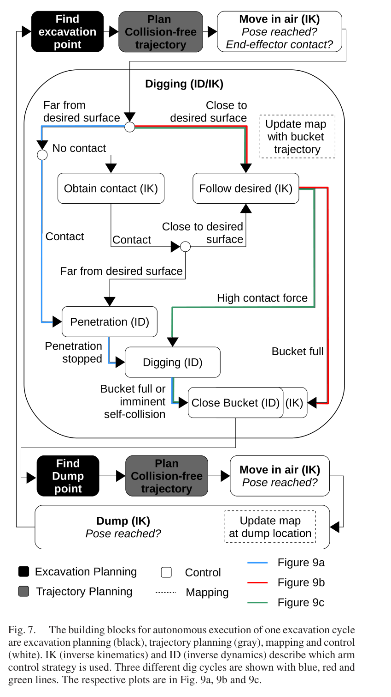
원문 Figure 7 · PDF p.6 — Fig. 7. The building blocks for autonomous execution of one excavation cycle are excavation planning (black), trajectory planning (gray), mapping and control (white). IK (inverse kinematics) and ID (inverse dynamics) describe which arm control strategy is used. Three different dig cycles are shown with blue, red and green lines. The respective plots are in Fig. 9a, 9b and 9c.
3.핵심 기술
자가 변경·가림을 다루는 고유감각-외감각 지도 융합
일반 고도지도는 보이는 표면만 갱신하므로 버킷 뒤에서 사라진 흙을 그대로 남길 수 있다. 논문은 굴착이 끝난 즉시 버킷 날이 통과한 선으로 제거 표면을 추정해 높은 분산으로 삽입한다. 이 값은 정답으로 고정되지 않고, 팔이 덤프 방향으로 선회해 시야가 열리면 LiDAR 관측이 빠르게 덮어쓴다.
공중 낙토는 버킷 아래를 따라 움직이는 PCL 상자필터로, 기체 자체는 다중 메쉬 self-filter로 제거한다. 결과적으로 작업 자체가 만드는 세 종류의 지도 오류를 상태기 정보로 억제하고, GNSS 지리참조된 완전한 트렌치 지도를 유지한다.
2×Velodyne Puck VLP-16 직교 배치
0.1 m 지도 해상도
고불확실성 버킷 궤적 삽입 후 LiDAR 재융합
falling-soil box와 robot self-filter
지도 표면을 직접 사용하는 충돌회피 spline 최적화
공격점과 덤프점 사이의 버킷은 이미 쌓인 흙과 트렌치 벽을 피해야 한다. SDF는 지표 위·아래를 부호로 구분하므로 굴착 직후 시작점이 표면 아래여도 계산할 수 있다. SQP는 충돌 지지점을 들어 올리고 spline 표본의 충돌·길이를 반복 최적화하며, 자기충돌은 국소 제어기에 남긴다.
cubic Hermite spline
2.5D 고도지도→3D SDF
CHOMP형 piecewise collision cost
SQP 지지점 최적화
위치·힘·유압모드가 결합된 실차 굴착 상태기
공중에서는 유량이 큰 파일럿단 밸브로 계층형 IK를 실행하고, 접촉 굴착에서는 힘대역폭이 20 Hz 이상인 Moog 서보밸브로 전환한다. 목표면에 가까우면 정삭 위치추종을 먼저 시도하다 큰 접촉력이 생기면 힘제어로 바꾸고, 목표면에서 멀면 처음부터 힘제어로 흙을 제거한다.
이전 시뮬레이션처럼 거친 굴착을 모두 끝낸 후 정삭하지 않고, 현재 지도와 접촉상태에 따라 두 동작을 매 사이클 교차한다. 이 설계가 작업순환을 짧게 하고 완성 구간을 다시 통과해 훼손할 가능성을 줄인다.
파일럿 속도제어 0.5 Hz·힘제어 0.85 Hz
서보 속도제어 >2 Hz·힘제어 >20 Hz
접촉·목표면거리·힘 임계치 기반 전환
버킷 충전부피와 차체근접 종료
4.실험 결과
실험 환경·장비·데이터
12 t HEAP(Menzi Muck M545), 14개 능동 차체 실린더, Hawe 파일럿단 밸브와 Moog 고압단 서보밸브, Hydac 어큐뮬레이터를 사용했다.
이중 GNSS RTK Leica iCON iXE3, 캐빈·차체 SBG Ellipse2-A IMU, 100 Hz Sick 드로와이어 센서, 서보밸브 압력센서, VLP-16 LiDAR 두 대를 탑재했다.
깨끗한 날의 폭 1.5 m grading bucket으로 실제 흙에서 4개 piecewise-planar 구간과 자유형 곡선 트렌치 두 형상을 시공했다.
실험 프로토콜
CAD 표면을 위에서 ray-tracing해 2.5D 목표지도로 만들고 HEAP가 한 번의 작업 세션에서 사용자 개입 없이 계획·굴착·덤프·재지도화를 반복했다.
완성 후 onboard LiDAR 고도와 목표고도의 차이를 종방향 단면 및 횡방향 평균으로 평가하고 평균오차와 표준편차를 계산했다.
9·12·13번째 굴착사이클을 사례로 목표면 추종, 완전 힘제어, 추종만으로 충전하는 세 상태경로를 분석했다.
비교 기준
저자들의 이전 시뮬레이션 자유형 굴착 결과 두 형상 평균오차 0.035 m와 0.044 m
Shao 등의 평탄 트렌치 오차 0.1 m 미만
Maeda 등의 평탄 트렌치 정확도 0.025 m; 다만 외감각 지형측정 없이 버킷 날 운동으로 고도를 추론
평가 지표
목표 형상 대비 셀 높이 평균오차와 표준편차
초기 제거 대상 토량과 최대 국소오차
밸브 방식별 속도·힘 제어 대역폭
무인 연속 시공 및 목표면·힘제어 상태전환의 정상 완료
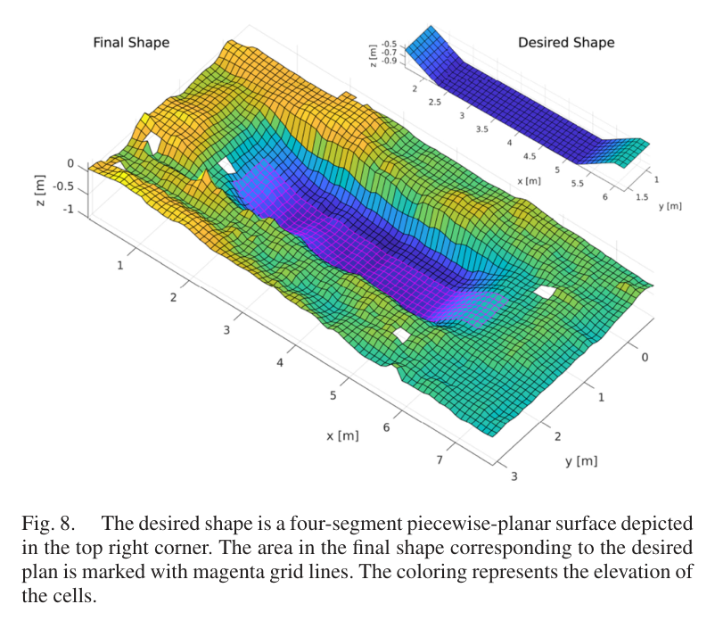
원문 Figure 8 · PDF p.7 — Fig. 8. The desired shape is a four-segment piecewise-planar surface depicted in the top right corner. The area in the final shape corresponding to the desired plan is marked with magenta grid lines. The coloring represents the elevation of the cells.
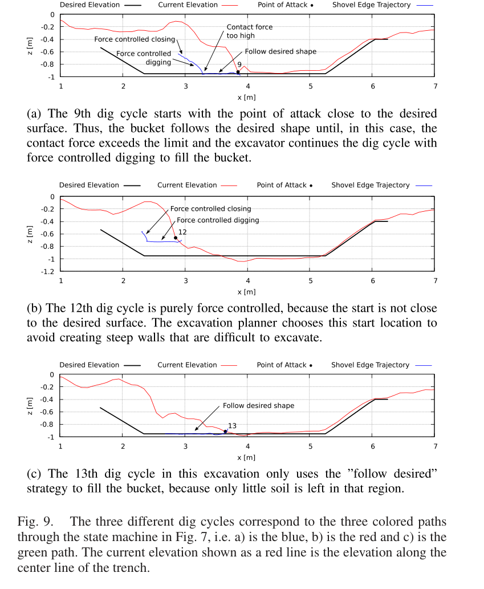
원문 Figure 9 · PDF p.7 — Fig. 9. The three different dig cycles correspond to the three colored paths through the state machine in Fig. 7, i.e. a) is the blue, b) is the red and c) is the green path. The current elevation shown as a red line is the elevation along the center line of the trench.
핵심 결과 해석
4분절 piecewise-planar 트렌치는 평균 0.027 m, 표준편차 약 0.035 m로 완성됐다. 초기 지형은 일부에서 목표보다 0.7 m 높고 약 2.1 m³를 제거해야 했지만, 수평면과 경사면 모두 비슷한 정확도로 수렴했다. 자유곡선 형상도 평균 0.024 m, 표준편차 0.032 m를 달성했다. 두 결과는 단순 평탄 바닥이 아니라 기울기와 곡률이 바뀌는 목표를 동일한 폐루프가 처리했음을 보여준다.
이전 시뮬레이션의 0.035 m·0.044 m보다 실차 결과가 같거나 더 좋았고, Shao의 평탄 트렌치 0.1 m 미만보다 작다. Maeda의 0.025 m와는 비슷하지만, 본 연구는 버킷 경로만으로 지형을 추정하지 않고 LiDAR 외감각 지도를 이용해 실제 형상을 평가했다. 정확도 수치뿐 아니라 12 t 장비가 두 형상을 한 번에, 개입 없이 끝낸 통합성이 핵심이다.
상태기 사례는 토양조건과 잔여오차에 따라 행동이 달라짐을 보였다. 목표면에 가까운 9번째 굴착은 위치추종 중 접촉력이 커지자 힘제어로 넘어갔고, 12번째는 가파른 벽 아래를 피한 높은 공격점에서 완전 힘제어로 상부 흙을 제거했다. 이후 13번째는 남은 흙이 적어 목표면 추종만으로 버킷을 채웠다.
정량 결과
평가 항목
정량 결과
조건·맥락
원문 근거
4분절 평면 트렌치 형상오차
평균 0.027 m, 표준편차 0.035 m
실차 무인 시공 후 목표 고도 대비한 4분절 평면 트렌치
PDF p.7
자유곡선 트렌치 형상오차
평균 0.024 m, 표준편차 0.032 m
HEAP 실차 자유형 곡선 형상
PDF p.7
초기 제거 대상
국소오차 최대 0.7 m, 약 2.1 m³
4분절 평면 트렌치 시작 지형
PDF p.8
지도 해상도
0.1 m
버킷 폭보다 15배 작은 굴착 고도지도 격자
PDF p.4
버킷 폭
1.5 m
이가 없는 grading bucket
PDF p.7
실패 사례와 경계조건
수직에 가까운 트렌치 벽은 2.5D 고도지도에서 본질적으로 높은 불확실성을 유지한다.
경로계획은 환경과의 충돌만 다루며 자기충돌은 국소 제어기에 의존한다. 복잡한 장애물에서 전역적으로 안전한 전신 궤적을 보장하지 않는다.
논문은 두 통제된 형상의 성공을 보이지만 큰 매설장애물, 센서고장, 장시간 작업 중 재계획 실패의 복구 실험은 제시하지 않는다.
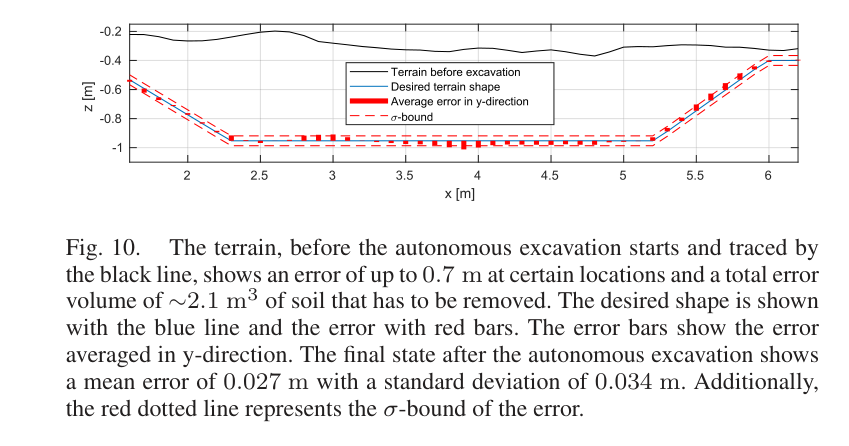
원문 Figure 10 · PDF p.8 — Fig. 10. The terrain, before the autonomous excavation starts and traced by the black line, shows an error of up to 0.7 m at certain locations and a total error volume of ∼2.1 m3 of soil that has to be removed. The desired shape is shown with the blue line and the error with red bars. The error bars show the error averaged in y-direction. The final state after the autonomous excavation shows a mean error of 0.027 m with a standard deviation of 0.034 m. Additionally, the red dotted line represents the σ-bound of the error.
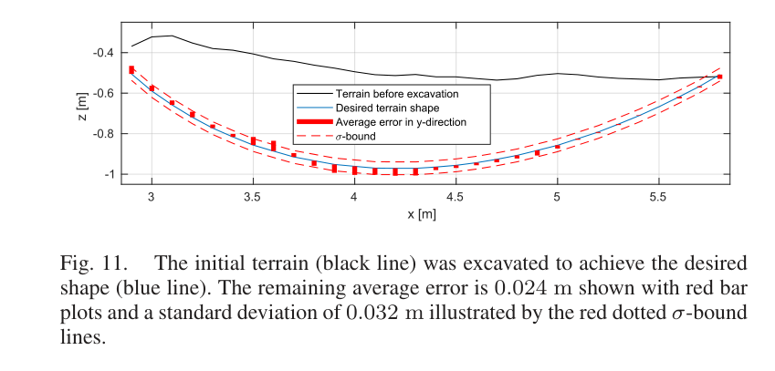
원문 Figure 11 · PDF p.8 — Fig. 11. The initial terrain (black line) was excavated to achieve the desired shape (blue line). The remaining average error is 0.024 m shown with red bar plots and a standard deviation of 0.032 m illustrated by the red dotted σ-bound lines.
5.한계 및 향후 연구
현재 한계
지도는 단일 높이의 2.5D 표현이어서 오버행을 다루지 못하고 가파른 측벽의 불확실성이 크다.
두 자유형 목표를 한 현장 장비로 검증했으며 토질 다양성·대형 장애물·장시간 반복작업에 대한 통계가 없다.
환경 충돌과 자기충돌이 각각 계획기와 제어기로 분리되어 전신 수준의 공동 최적 안전보장은 없다.
서보·파일럿 이중 유압개조와 다중 센서 구성이 크고 복잡해 일반 상용장비로의 이식 비용이 남는다.
향후 연구
저자들이 언급한 extended robotically fabricated landscapes로 작업영역과 연속 시공 규모를 확장한다.
GNSS 의존도를 낮춘 현장 측위와 굴착 지도정합을 결합해 터널·도심 협소현장으로 적용범위를 넓힐 수 있다.
12 t HEAP가 개입 없이 4분절·곡선 트렌치를 만들고 평균 2.7 cm·2.4 cm 오차를 달성했다.
한계는?
2.5D·RTK 기반 두 형상 실증이며 큰 장애물, 다양한 토질, 장시간 고장복구와 전신 충돌보장은 남았다.
#시스템통합·현장실증#작업·궤적계획#제어·MPC#측위·매핑#작업 인지형 고도지도#SQP 충돌회피#힘 기반 굴착 상태기
나의 의견 / 우리 연구와의 연관성
이 논문은 자율굴착을 단일 알고리즘이 아니라 인지-계획-제어-작업상태의 연결문제로 보여준다. 지도는 버킷이 만든 변화를 작업상태와 함께 해석하고, 계획기는 지형과 기계한계를 고려하며, 제어기는 공중의 위치정밀도와 접촉의 힘순응성을 전환한다. 국내 자율작업 굴착기에서도 작업지시가 CAD 또는 설계고도로 주어질 때 필요한 시스템 경계가 거의 그대로 드러난다.
특히 가림영역을 버킷 궤적으로 고불확실성 갱신한 뒤 LiDAR로 재확인하는 방식은 굴착지도에서 측정 누락과 실제 제거를 구분하는 실용적 패턴이다. 다만 원문 성능을 재현하려면 cm급 위치·관절계측과 힘제어 가능한 유압계가 전제되므로, 표준 파일럿 밸브 장비에서는 데이터 기반 유압보상 또는 저대역 상태기 설계가 추가로 필요하다.
설계고도-현재고도 차이에서 공격점을 선택하고 굴착·덤프·재측정을 반복하는 폐루프는 토공 작업관리의 기본 실행단위로 재사용할 수 있다.
버킷 날 궤적을 고불확실성 지도관측으로 취급하면 먼지·가림 속에서도 제거영역을 잃지 않고 후속 LiDAR로 검증할 수 있다.
공중 이동은 위치제어, 토양 접촉은 힘제어로 나누되 접촉력과 목표면 거리로 전환하는 상태기는 돌·뿌리 대응 상태를 추가하기 쉽다.
2.4~2.7 cm 형상오차는 자유곡면 시공의 가능성을 보이지만, 실제 현장 적용 평가는 정확도와 함께 복구율·작업시간·에너지·버킷 충전율을 봐야 한다.
7.전체 그림·표
본문 핵심 위치에 배치하지 않은 원문 Figure와 Table을 원문 페이지 순서로 수록한다.
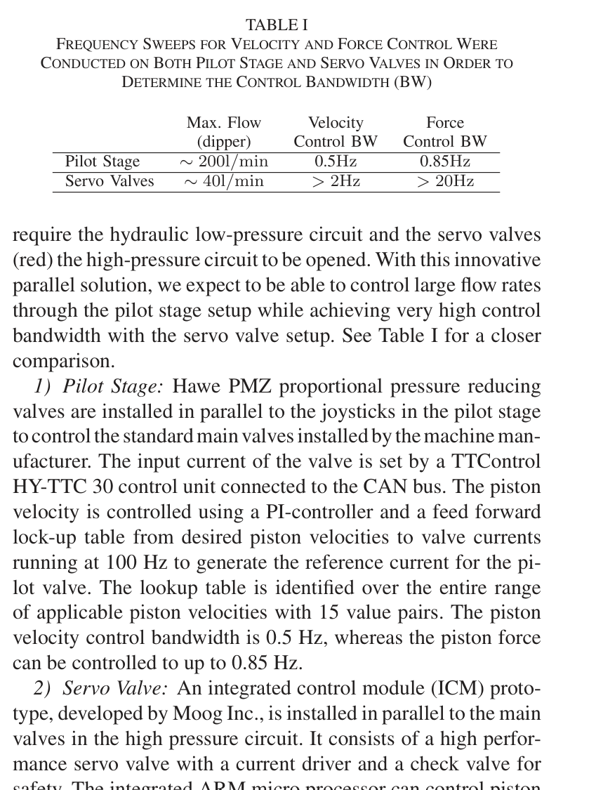
원문 Table I · PDF p.2 — TABLE I FREQUENCY SWEEPS FOR VELOCITY AND FORCE CONTROL WERE CONDUCTED ON BOTH PILOT STAGE AND SERVO VALVES IN ORDER TO
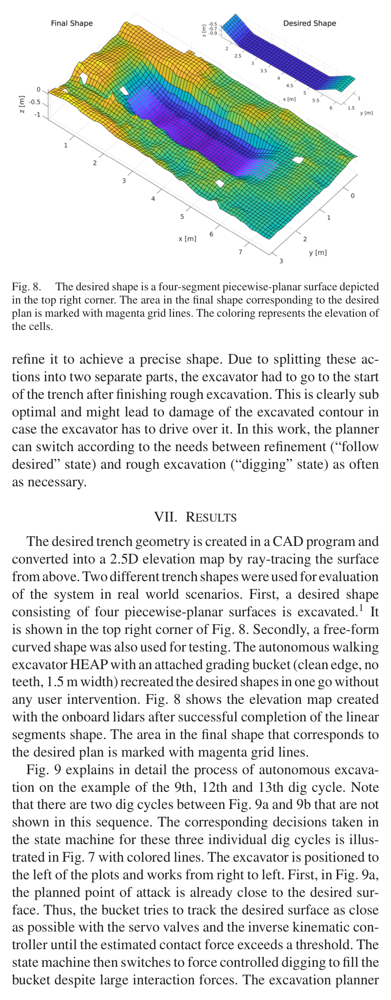
원문 Figure 9 · PDF p.7 — Fig. 9 explains in detail the process of autonomous excava- tion on the example of the 9th, 12th and 13th dig cycle. Note that there are two dig cycles between Fig. 9a and 9b that are not shown in this sequence. The corresponding decisions taken in the state machine for these three individual dig cycles is illus- trated in Fig. 7 with colored lines. The excavator is positioned to the left of the plots and works from right to left. First, in Fig. 9a, the planned point of attack is already close to the desired sur- face. Thus, the bucket tries to track the desired surface as close as possible with the servo valves and the inverse kinematic con- troller until the estimated contact force exceeds a threshold. The state machine then switches to force controlled digging to fill the bucket despite large interaction forces. The excavation planner